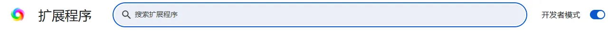
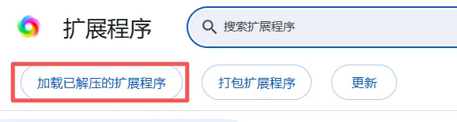
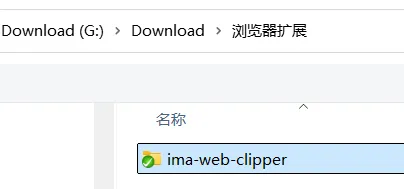
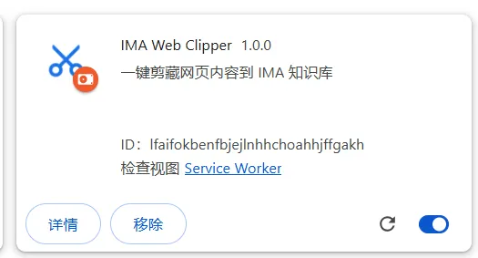
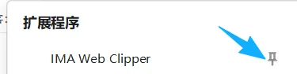
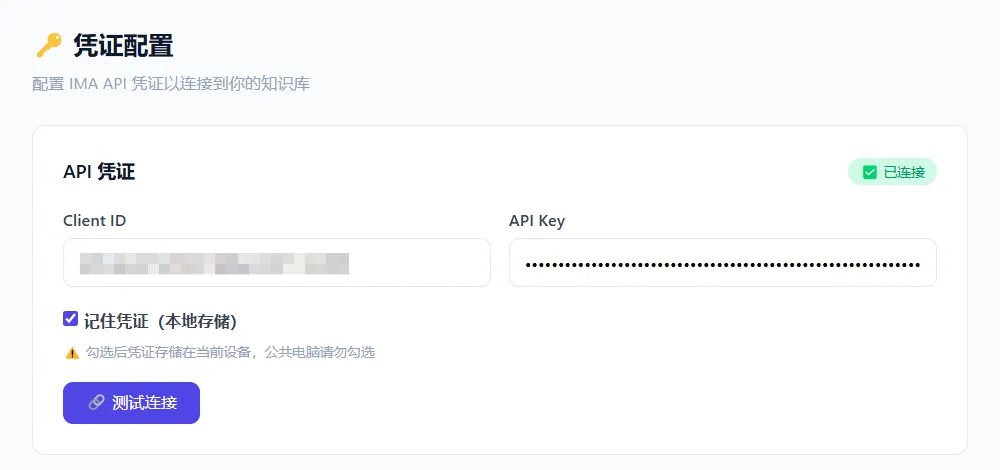
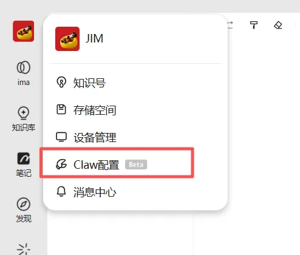
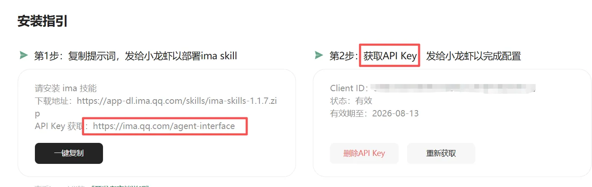
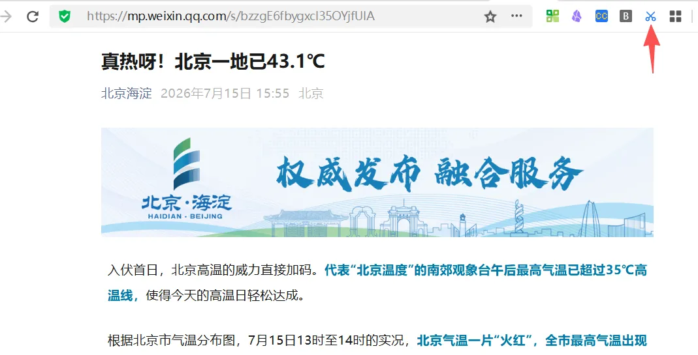
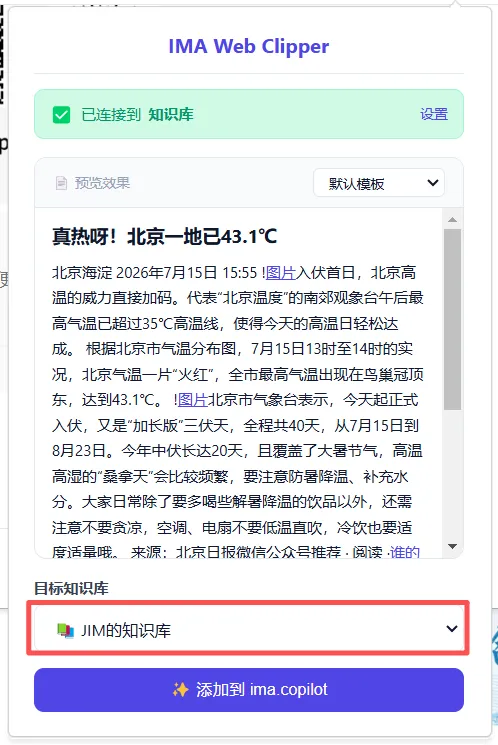

🔑 凭证配置
配置 IMA API 凭证以连接到你的知识库
API 凭证
未配置⚠️ 勾选后凭证存储在当前设备，公共电脑请勿勾选
📚 知识库
查看你账号下的知识库列表
知识库列表
请先测试连接连接成功后，点击下方按钮获取你的知识库列表。点击卡片右侧的「置顶」可将知识库置顶，置顶的会排在列表最前面；再次点击「取消置顶」即可恢复原顺序。
📝 模板管理
自定义 Markdown 模板，支持 YAML 元数据（标题/作者/日期/关键词/标签）
模板0 个
📖 查看可用变量说明
{{title}} — 文章标题{{url}} — 网页 URL{{date}} — 剪藏时间{{content}} — 文章内容 (Markdown){{excerpt}} — 文章摘要{{author}} — 文章作者{{selection}} — 选中文本📖 使用指南
安装 · 配置 · 使用（与官方教程一致）
📦 一、安装插件
-
1先把压缩包解压到一个固定目录（比如
D:\chrome_ext\），解压后里面应该能看到manifest.json文件，这说明解压对了。💡 路径别放桌面之类容易误删的地方，开发者模式加载的插件依赖原路径，挪了就失效。 -
2打开浏览器，地址栏输入
chrome://extensions/回车，进扩展管理页。（如果无法打开，可以尝试se://extensions/） -
3右上角打开 「开发者模式」开关（变蓝）。图1开启「开发者模式」

-
4点击 「加载已解压的扩展程序」，选中第 1 步那个解压后的文件夹，确定。图2点击「加载已解压的扩展程序」

图3选中解压后的文件夹，确定
-
5装完会在扩展列表里出现，工具栏也能看到图标，就能用了。图4装完在扩展列表里出现

-
6工具栏的插件按钮，可以看到，并且可以设置为置顶。图5工具栏按钮可以设置为置顶

🔑 二、配置插件
-
1如果第一次使用插件，或者未正确配置插件，打开插件时会提示去配置。图6未配置时打开插件会提示去配置

-
2以上信息可以在 ima 的界面找到：
①前往 Claw 配置界面
图7前往 Claw 配置界面

②获得 Client ID 和 API KEY
图8获得 Client ID 和 API KEY

③在浏览器插件配置。
⚠️ 注意：Client 插件有效期一个月，过期后可以续期。
✂️ 三、使用插件
-
1在希望保存的页面，点击插件 icon图9在希望保存的页面，点击插件 icon

-
2选择希望保存的知识库图10选择希望保存的知识库

-
3点击 「添加到 ima.copilot」，搞定！
🖱️ 补充：快速剪藏
右键菜单：页面右键 → 「另存到 IMA」→ 选择剪藏方式
快捷键：打开插件弹窗
Ctrl + Shift + S
Mac 快捷键
Cmd + Shift + S
ℹ️ 关于
IMA Web Clipper 浏览器扩展
版本：v1.6.0
技术栈：Manifest V3 · 原生 JS · Readability.js · Turndown.js
功能：
- 📄 两种剪藏方式：完整内容 / 仅 URL
- 🖼️ 微信公众号文章专项优化
- 📝 自定义 Markdown 模板（支持 YAML frontmatter）
- 👁️ 实时预览：保存前可见最终效果
- ⌨️ 快捷键 Ctrl+Shift+S / Cmd+Shift+S
- 🖱️ 右键菜单「另存到 IMA」
- 🔐 分级安全存储（Session / Local）
- 📂 知识库树形浏览与文件夹选择
📜 版本记录
最新🔄 配置管理
导出或导入 API 凭证与自定义模板（JSON 格式）
⬇️ 导出配置
导出内容包含 API 凭证与自定义模板，不含知识库列表（连接后由接口自动获取）。先点击「生成预览」查看 JSON，确认后再点击「导出 JSON 文件」下载。
⚠️ 导出文件包含 API 凭证（clientId / apiKey），请妥善保管，勿泄露给他人。
点击「生成预览」后，此处显示待导出的 JSON 内容
📂 导入配置
选择 JSON 文件 → 预览内容确认无误 → 点击「更新配置」。知识库列表不会随导入恢复，导入完成后需重新测试连接获取。
选择文件后，此处显示文件的 JSON 内容